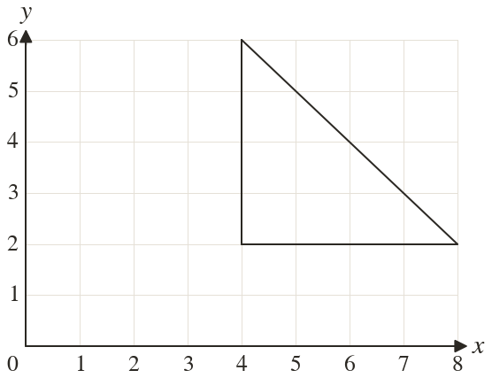
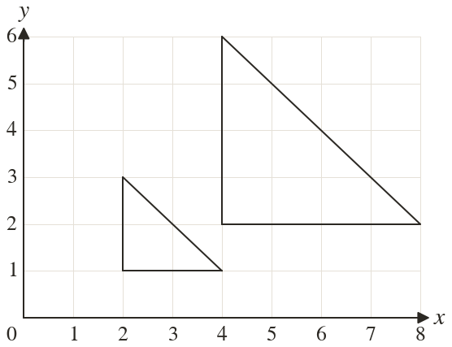
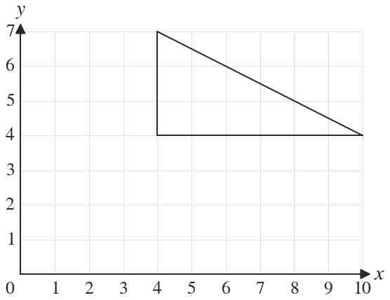
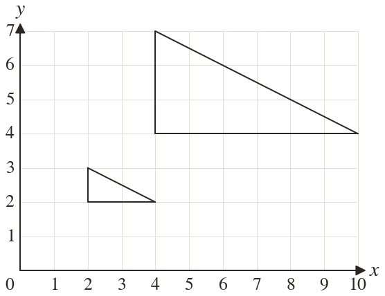
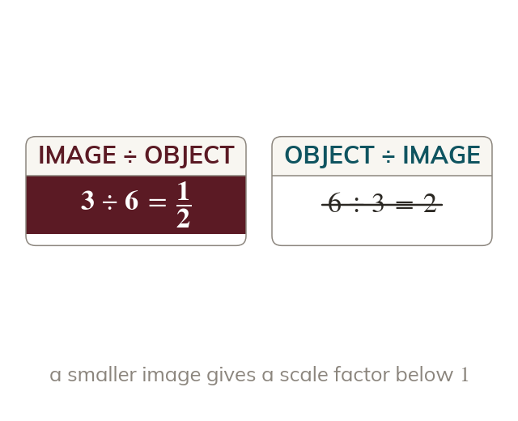
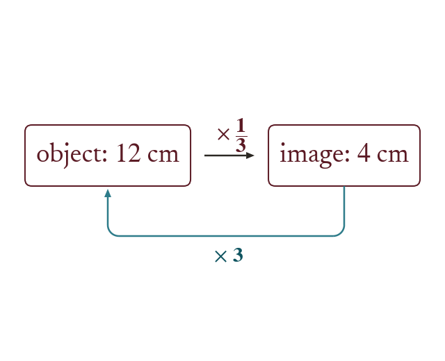

A photo shrunk to fit a passport, or a building drawn on a plan, is an enlargement too: one that makes the shape smaller. The same rule works with a fraction.
By the end you’ll know…
A scale factor between and produces an image smaller than the object, and it is still called an enlargement.
The rule is unchanged: each distance from the centre is multiplied by so halves every distance from the centre.
The image is still similar to the object, and the enlargement with scale factor about the same centre undoes it.
By the end you can
G4Enlarge a shape by a fractional scale factor about a given centre.
G5Calculate the fractional scale factor connecting an object and a smaller image, and use it to find a missing length.
Work down the page at your own pace. Write every answer in your book first, then click to check it.
01
Do Now
About 5 minutes
1
Find of cm.
cm
2
Two similar rectangles have scale factor The larger is cm long. How long is the smaller?
cm
3
Enlarge the point by scale factor centre
4
Enlarge the point by scale factor centre
Remember these?
LAST LESSONAn enlargement with centre maps the point onto Find the scale factor.
Scale factor
LAST WEEKReflect the point in the line
LAST TERMFind the area of a circle with radius cm, to decimal place.
cm²
LAST YEARWork out
02
Learn
Read each card, then follow the worked examples one step at a time.
A fraction makes it smaller
A scale factor between and gives a smaller image. It is still called an enlargement. With every distance from the centre halves.
A scale factor between and gives a smaller image, and it is still called an enlargement. With every distance from the centre is halved.
Undo it with the reciprocal
An enlargement by is undone by an enlargement by about the same centre. The object and the image are similar either way.
WORKED EXAMPLE A
Enlarge the flag by scale factor centre
Halveevery distance from is halved, so each coordinate halves
Points to to to
Checkthe stem was and is now
WORKED EXAMPLE B
Enlarge the flag by scale factor centre
Countthe foot is right and up from the centre, so its image is right and up, at
Points to and to
Checkthe stem was and is now
YOUR TURN · a
Enlarge the point by scale factor centre
YOUR TURN · b
Enlarge the point by scale factor centre
right and up becomes right and up:
03
Check your understanding
Pick an answer. If it's wrong, the feedback tells you which mistake it was.
A shape is enlarged by scale factor What happens to its lengths?
Yes. Times makes each length a quarter of what it was.
Not quite. Times makes it smaller, not times bigger.
Not quite. A scale factor less than still counts. It makes the shape smaller.
Not quite. Multiply by don't take off.
Enlarge the point by scale factor centre
Not quite. Times halves, it doesn't double.
Yes. Half of each:
Not quite. Multiply by don't subtract it.
Not quite. Scale factor still changes it. Halve each coordinate.
Enlarge the point by scale factor centre
Not quite. Measure from the centre not from
Not quite. Times halves, it doesn't double.
Yes. From it's right, up. Halved: right, up, so
Not quite. Scale factor still changes it. Halve the distance from
04
Practise
mark as you go
Checkpoint. Enlarge the triangle with corners and by scale factor centre and write down the corners of the image.Show your teacher before you go on
Enlarge the triangle by scale factor centre Write down the corners of the image.

Halve each coordinate: and

2
Enlarge the triangle by scale factor centre Write down the corners of the image.

and

3
Enlarge the point by scale factor centre
and :
4
Enlarge the point by scale factor centre
right and up becomes right and up:
5
A rectangle cm by cm is enlarged by scale factor Find the sides of the image.
cm and cm
EXT
Enlarge by scale factor centre Which enlargement maps the image back?
; back: scale factor centre
05
Learn
Read each card, then follow the worked examples one step at a time.

Image divided by object
The scale factor is still an image length divided by its object length. When the image is smaller, the answer is a fraction below

Then use the scale factor
Multiply an object length by k to find its image length. Divide an image length by k, or multiply by the reciprocal, to go back.
WORKED EXAMPLE C
A side of cm is cm on its enlargement. Find the scale factor.
Divide image by object.
Simplify
Scale factor
WORKED EXAMPLE D
A photo cm wide and cm tall is reduced to cm wide. Find its new height.
Find the scale factor
Multiply the height cm
YOUR TURN · c
A side of cm matches a side of cm on the enlargement. Find the scale factor.
YOUR TURN · d
A poster cm by cm is enlarged by scale factor Find its new size.
cm by cm
06
Check your understanding
Pick an answer. If it's wrong, the feedback tells you which mistake it was.
A side of cm is cm on the enlargement. What is the scale factor?
Not quite. It's upside down. New ÷ old:
Not quite. A scale factor multiplies. Divide:
Yes.
Not quite. A shape getting smaller still counts as an enlargement.
A shape is enlarged by scale factor What does a side of cm become?
Not quite. That's of You need :
Not quite. Multiply by don't divide.
Yes. cm.
Not quite. Multiply by don't take off.
Enlarge the point by scale factor centre
Not quite. Times means divide by not times
Not quite. Times means divide by not subtract
Not quite. Scale factor still changes it. Divide each coordinate by
Yes. A third of each:
07
Practise
mark as you go
Checkpoint. A picture cm wide and cm tall is reduced so that it is cm wide. Find the scale factor and the new height.Show your teacher before you go on
1
A side of cm is cm on its enlargement. Find the scale factor.
2
A side of cm is cm on its enlargement. Find the scale factor as a fraction in its simplest form.
3
A photo cm wide and cm tall is reduced to cm wide. Find the scale factor and the new height.
Height: cm
4
A triangle has sides cm, cm and cm. It is enlarged by scale factor Find the sides of the image.
cm, cm and cm
5
A building m tall has a model cm tall. Find the scale factor from the building to the model.
m cm
EXT
Shape A is enlarged by scale factor to , and by scale factor to , all about the same centre. Find the scale factor from A to , and from to A.
A to : C to :
08
Exit ticket
On paper, on your own, then check
1
Does an enlargement by scale factor make a shape bigger or smaller?
Smaller: every length is a third as long.
2
Enlarge the point by scale factor centre
3
A side of cm is cm on the enlargement. Find the scale factor.
Finished? Next lesson: 10.14.6 Symmetry in Two Dimensions.
Practise more
After the lesson, or whenever you want more
Dr Frost
Log in, then search for a code to practise that skill.
297aEnlarge/dilate a shape by a unit fraction scale factor.
291cDetermine the scale factor between two similar shapes.
292aDetermine unknown lengths given two separate similar shapes.